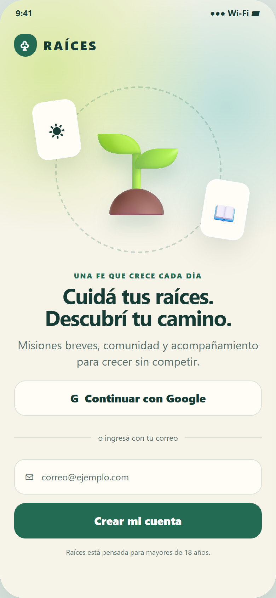
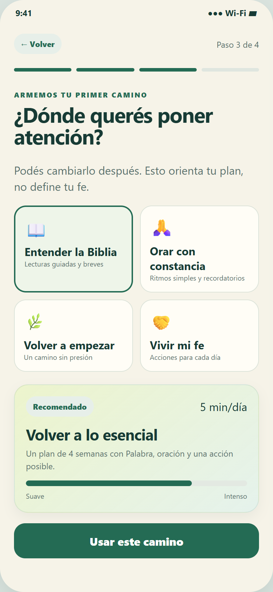
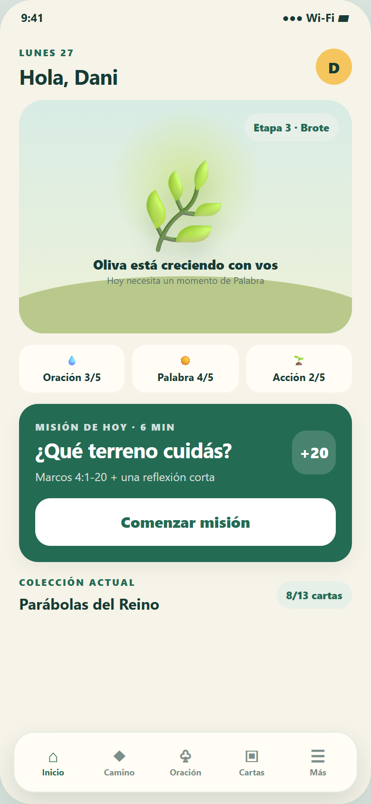
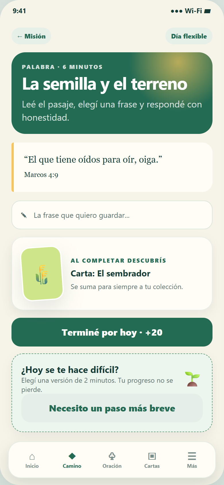
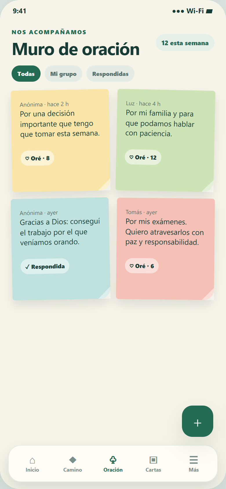
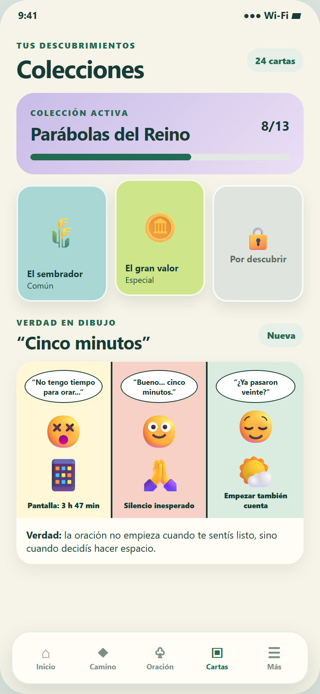
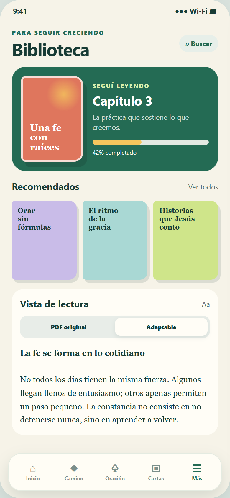
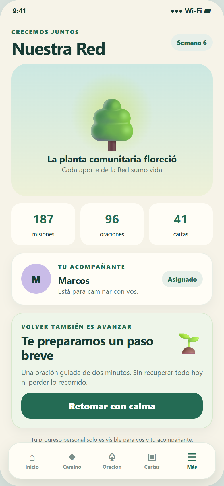

Primera visita
Acceso
Ingreso obligatorio para conservar el recorrido personal.
- Correo y contraseña
- Solo mayores de 18 años
El inicio funciona como centro de la experiencia. Desde allí la persona entra a su misión, comunidad, colecciones, biblioteca y acompañamiento; siempre puede volver sin perder progreso.

Ingreso obligatorio para conservar el recorrido personal.

Recomienda un camino sin diagnosticar a la persona.

Resume el estado actual y ofrece una sola acción principal.

CaminoLectura, oración, acción o reflexión. Completarla nutre la planta y puede desbloquear una carta.

OraciónPeticiones visuales tipo post-it. Cada persona decide su nivel de privacidad antes de publicar.

CartasLos descubrimientos permanecen. Incluyen verdades bíblicas, insignias, desafíos y humor aplicado.

MásLibros subidos por administradores. La persona conserva su última lectura y elige cómo leer.

ComunidadEl grupo celebra resultados colectivos. El recorrido individual sigue siendo privado.